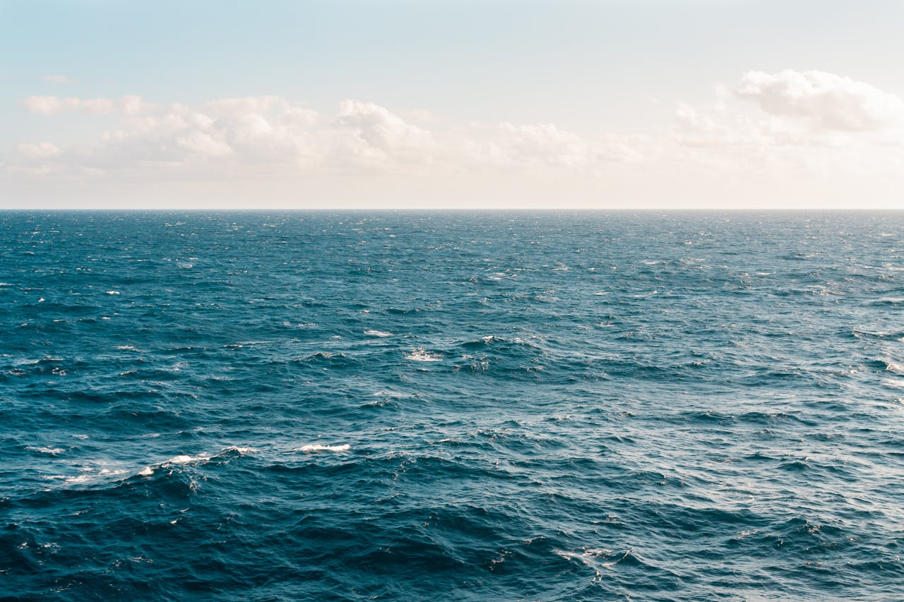
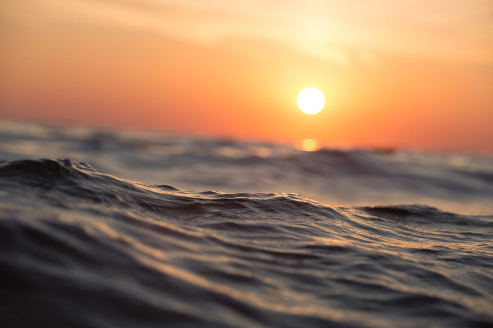

-

oceano o filme
5 anos após o mundo inteiro ter sido alagado pelo maior tsuname que já existiu, os ultimos sobreviventes tem uma unica missão, aprender a viver nessa nova realidade em que estão. mas seus desafios estão apenas no começo
-

tubarão o filme
em um dia de praia, tubarões começam a invadir as aguas e atacar civis e devorar a suas carnes debaixo da agua, as autoridades competentes se perguntam o porque desse acontecimento repentino
-

a terra perdida de atlanta
lendas e histórias foram contadas a respeito dessa cidade, mas ninguem nunca a tinha visto de verdade, bom, pelomenos até agora.
-

deserto um novo mundo
após erick viajar sozinho para o deserto como peregrino em busca de revelações e comunicação direta com deus, ele descobre uma nova profissão, caçar demonios.
-

a estrada até aqui
depois de duas decadas de seca no deserto do saara o viajante misterioso tem que achar um jeito de sobreviver sozinho indo de deserto para deserto. tudo o que ele tem é seu impala 1967